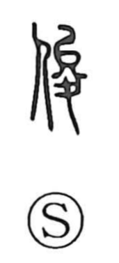

俊

Uncategorized
Kun: | On: shun
talented ・ brilliant ・ sagacious ・ outstanding person
Explanation
A phono-semantic character: the person radical combines with the phonetic 夋 (shun). In ancient forms 夋 depicts a tall divine figure wearing a headpiece shaped like ム—a stylized plow—signifying grandeur and noble dignity. This phonetic carries a sense of height, excellence, and distinction, which resonates across related characters: 峻 for high, steep mountains; 畯 for a deity of the rice field; and 駿 for a swift, outstanding horse. Joined to “person,” it yields 俊, denoting someone keen and wise—an individual of exceptional intelligence and talent.